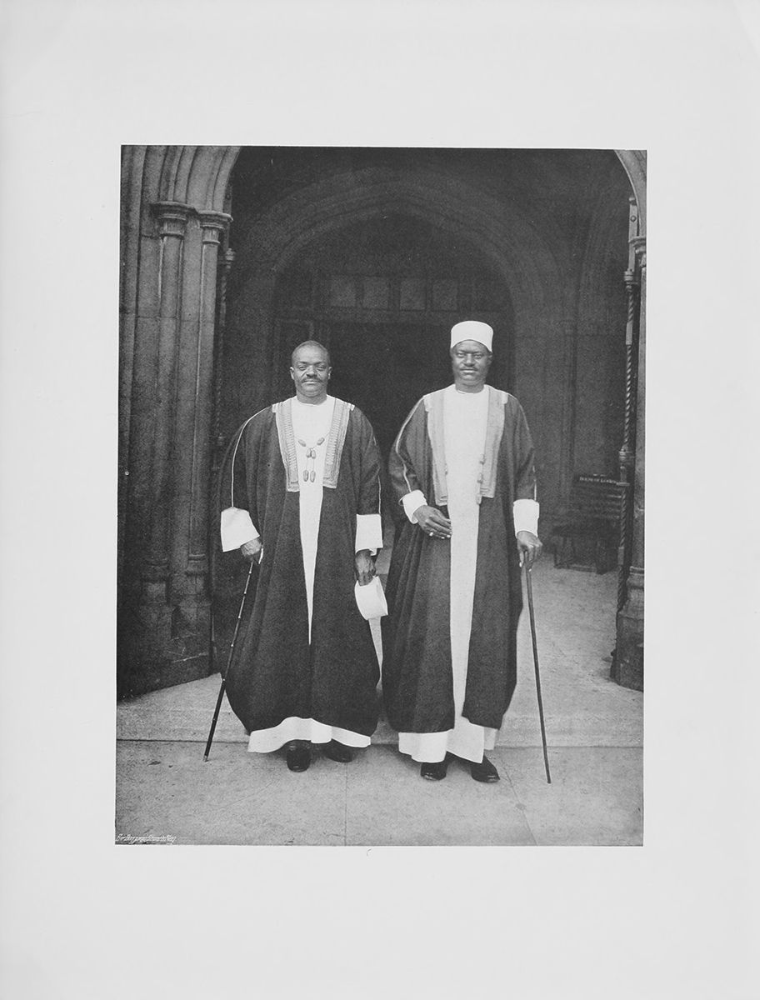

Apolo Kagwa, Katikiro of Uganda, and his Secretary, Ham Mukasa, were among King Edward's guests at the Coronation. Uganda, where elephants are still numerous and the banana grows in wild profusion, is under the administration of a British Commissioner. But it has its native King, and the Katikiro is his Chief Minister, being, at once, a sort of Premier and Chief Justice, the maker of laws and the righter of wrongs.
These ebony-skinned visitors from Central Africa won the esteem and regard of all who were brought into relations with them by their intelligence and alertness, the keen interest they displayed in the wonders of civilisation, their agreeable ways, and, above all, the contagious glint of their smiles. The Katikiro was the taller of the two, being a couple of inches over six feet, and well built in proportion. He became a Christian at an early age, and to him, mainly, is due the progress of Uganda from a barbarous and unruly to an orderly and industrious community.
He was asked what were his impressions of England. "First," he replied, "that you have no mosquitoes; second, that your roads are all good, and that you have many horses and carriages; thirdly, that your houses are large and well built; fourthly, that you live together in great crowds; and lastly, that you have a splendid police force, which prevents fighting in the streets, and keeps order even when many have gathered together."
0002